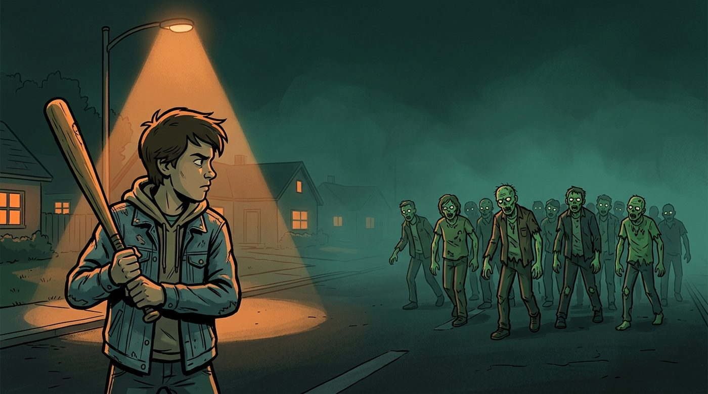
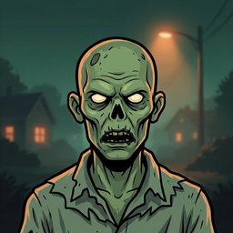
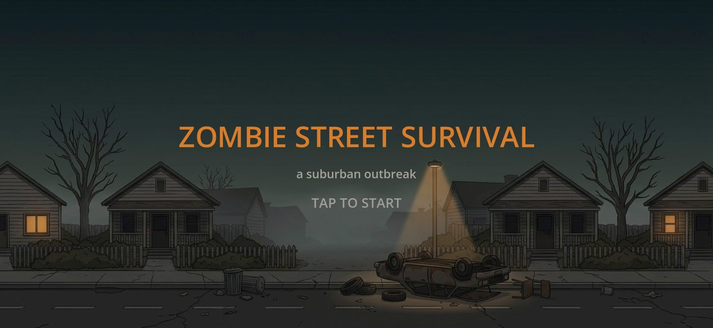
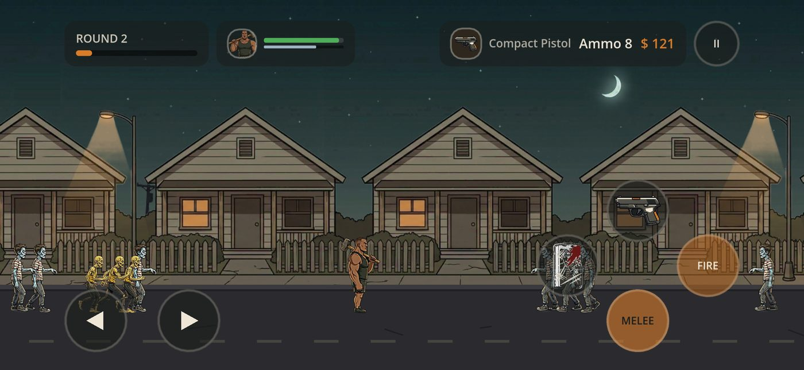
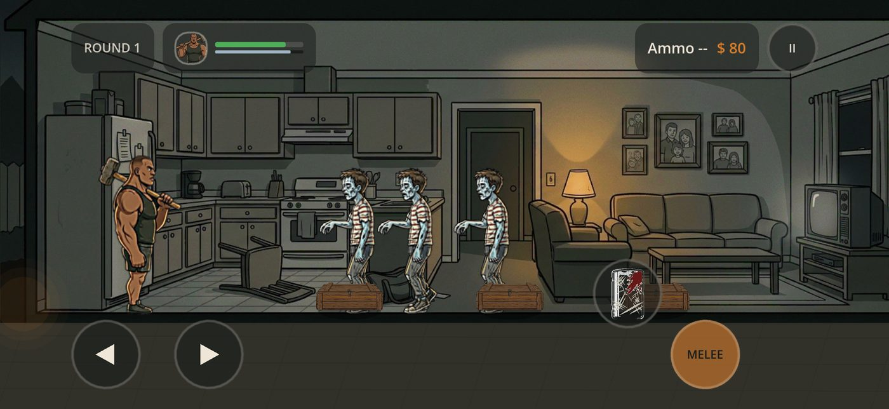
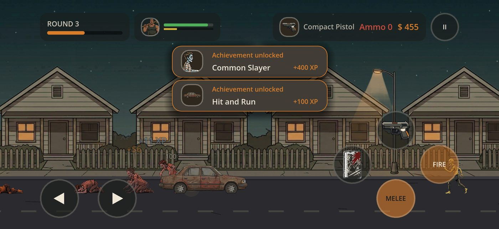
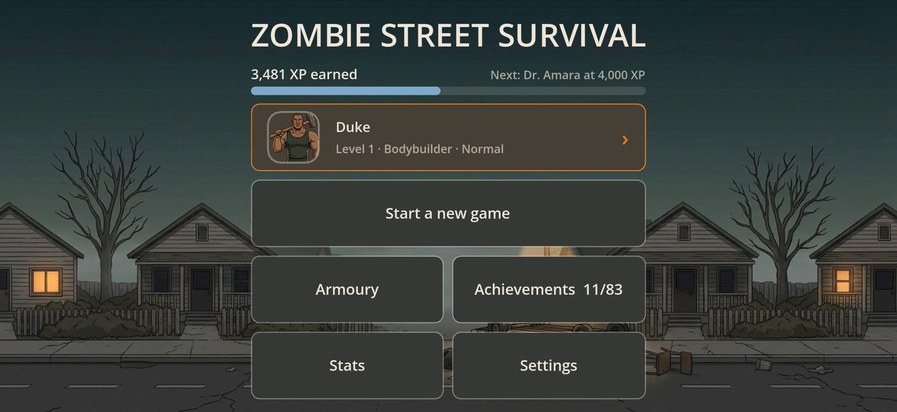
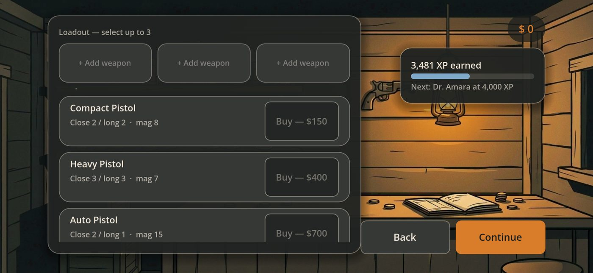

Survive the endless nightZombie Street Survival
An offline zombie survival game for phones. I designed and directed it, built it with Claude Code as my AI pair programmer, and took it from first commit to App Store submission in about six and a half weeks.
Project overview
- Project type
- Independent product, mobile game
- Role
- Product owner, game designer, creative director, playtester and release manager
- Platforms
- iOS, with Android playtest builds
- Tools
- Godot 4, Claude Code, Kling AI, Google Gemini, Python
- Duration
- 28 Aug to 12 Oct 2026
Key summary
Zombie Street Survival is a 2D side-scrolling survival game. You fight through an endless run of street rounds on foot or by car, loot houses, recruit a survivor and spend your money in a shop between rounds, slowly unlocking new characters and weapons. I wrote the brief, designed the economy, directed the art and played every build on real phones, while Claude Code wrote the code from my brief and feedback. The project is really about one skill: directing AI work to a professional standard, by asking for root causes instead of quick patches and insisting every fix is backed by a test.
The Idea
The Brief
The goal was a complete mobile game, made on my own, that a player could buy once and keep. It started with a written design brief, an economy and pacing spreadsheet, and HTML mockups of the main screens.

I set myself four constraints from the start, and every later decision was checked against them.
Solo
One person making every product decision, with an AI pair programmer doing the building.
Offline
No accounts, no network access and nothing to sign in to. It works on a plane.
Made for phones
Landscape, touch controls, notched screens and short sessions, tested on real iPhone and Android devices.
Honest to buy
A one-off 99p. No ads, no in-app purchases and, according to Apple’s privacy label, no data collected.
What’s in the Game
Each round is a stretch of street. Zombies scale up every round, and the run only ends when you do.
Street rounds
Melee weapons that wear down and can be repaired, a block, and guns from pistols to a flamethrower, all on a four button action diamond.
Four kinds of zombie
Common, quick ones that jab twice, slow powerful ones with a heavy wind-up, and a werewolf that howls when it arrives.
Houses, a survivor and a car
Multi-floor houses to loot, a survivor who follows you and fights with their own ammo, and a car every third round to run zombies over.
A reason to come back
A between-round shop, 10 characters and 13 weapons unlocked with account-wide XP, 83 achievements and a lifetime stats page.



Who Did What
I want to be precise about this, because it is the most interesting part of the project. I did not write the code. I designed and directed the game, and I directed an AI to build it to a standard I was happy to put my name on.
Me
- Wrote the game design brief, the economy and pacing spreadsheet, and the screen mockups
- Chose the art direction and produced the art: still artwork, icons and key art in Google Gemini, and the character and zombie animation in Kling AI
- Supplied the sound effects and music
- Playtested on real iPhone and Android devices and fed back in batches
- Made the product calls: difficulty, the unlock curve, rewards, pricing and what to cut
- Ran the Apple side, from TestFlight and App Store Connect to the age rating and privacy questionnaires and the final submission
Claude Code
- Wrote the game in GDScript from my brief and feedback
- Wrote the automated test suite and the tooling
- Investigated and root-caused the bugs I found in playtesting
- Prepared the Android and iOS builds
- Drafted the App Store listing copy, the support and privacy website and the project documentation
- Proposed options and trade-offs, and flagged risks for me to decide on
Directing the Build
The Loop
The whole game was built by repeating one loop more than thirty times. Each round ended in a written log entry, so decisions and dead ends survived even when the AI’s memory of the conversation did not.
- Play it on a real phoneI played the latest build on an iPhone or Android device, never just a simulator.
- Send feedback in a batchSpecific bugs, things that felt wrong and design changes, grouped together rather than drip fed.
- Find the root causeI asked for the real cause and evidence for it, and pushed back on fixes that only hid the symptom.
- Fix it and lock it inEvery fix came with a regression test, then the full test suite had to pass before a new build.
- Write it downA running log recorded what we found, what we tried and what we learned.
Built on Data, Not Guesswork
Every gameplay number, from zombie health to weapon damage and unlock costs, lives in six data files rather than being buried in code. My design spreadsheet is the source of truth, and the test suite reproduces its tabs, so a balance change cannot quietly break something else.
automated tests with 3,381 checks, all passing at submission
scripts, about 11,500 lines of game code across 24 scenes
weeks from the first commit to App Store submission, over 59 commits
The Sound Was Late, but the Code Was Fine
Playtesters said button and hit sounds felt laggy. The first fix moved the click to the very moment of touch, which helped a little. I wasn’t satisfied and asked the obvious question: can’t we just fix the lag?
Measuring the sound files themselves showed the problem was never in the code. The button click began with about 650 milliseconds of near silence, and other sounds had the same dead air at the start: the player getting hurt about 550 ms, a melee hit about 285 ms and the werewolf howl about 920 ms.
So the code change was reverted. Instead, a script trimmed the silence from the start of all 24 one-shot sounds, and a new test fails if any sound ever starts late again.
Measure the asset before you change the logic
Designing the Game
Everything Unlocked in 30 Minutes
When I modelled the economy against my spreadsheet, the numbers in the build at the time let a player unlock every character and weapon in roughly one 30 minute run. That is a retention problem: once there is nothing left to earn, there is less reason to come back.
I raised the unlock costs by about three to six times on a curve that starts fast and gets steep at the end, so new players still get early rewards. The final character went from 13,000 XP to 80,000 XP, aiming for roughly five to six hours to unlock everything. I also added run counters on the device so the target can be checked against real play, without collecting any data.

From about 30 minutes to a five to six hour target
Design Calls
Cutting the XP bar
An XP progress bar went into the round screen, looked too busy in playtesting and was removed the same day. It stays on the shop and menu, where a player has time to read it.
You can’t outrun the horde
Zombies left far behind are moved back to the front of the screen and walk in again, keeping their health and type, so a fast player can’t simply leave the threat behind.
Rewards that fit the effort
Achievements grew from 40 to 83 after playtest feedback. The longest-haul rewards are deliberately small, about 4 to 5% of the XP earned on the way.
Priced for the game it is
An offline, single-player game shouldn’t need ads or a store inside it, so it is a one-off 99p and that is it.

The AI Art Pipeline
Hand-drawing 14 animated characters and enemies wasn’t realistic for one person, so I made the art with two AI tools: Google Gemini for the still artwork and Kling AI for the animation. Then we built a pipeline to turn Kling’s video clips into clean game animation, about 600 frames in all.
- One still, three clipsEach character starts as a single still image I made in Google Gemini, which Kling AI then animates into five second walk, attack and death clips. Using the same image as the first and last frame gives a seamless walk loop.
- From video to framesA Python script keys out the flat grey background, steadies the crop, finds the part of the clip with the motion and saves a fixed number of frames.
- Automatic quality checksTools compare each frame’s outline with the next to catch missing frames, and look for characters that have turned partly see-through.
- Everything elseVariants of the same tools handle still objects like the car and crates, painted background layers and a real flamethrower clip turned into a looping flame. Google Gemini also made the UI icons, the app icon and the key art.
One lesson worth keeping: image models fake a transparent background by drawing a checkerboard, so it works better to ask for a flat colour and key it out yourself, then check the outer pixels for a stray border.
Accessibility and the Interface
The interface runs on a small design system of its own, with tokens and reusable components on an 8 point grid. Touch targets were audited against Apple’s 44 point minimum, text contrast was checked against WCAG, and the layout respects the safe areas on notched phones.
The biggest accessibility feature is a colourblind mode that puts a distinct shape over each type of zombie, so you can tell a quick one from a powerful one without relying on colour. Getting those shapes to sit on each zombie’s head took two fixes: measuring the symbol itself, and measuring where the head sits in every single frame of animation, since the art isn’t centred in its frames. You can also swap the Block and Fire buttons to suit your hands, turn off damage numbers and adjust the audio.
Testing
Bugs Only a Real Phone Could Find
The automated tests kept passing while real devices kept finding problems. Each one below was traced from what I saw on the phone to its real cause, fixed and then locked in with a test.
“I can’t get in the car”
- What I saw
- Tapping the car got you in and straight back out again.
- The real cause
- Every real tap sent two events, a touch and a fake mouse click. Tests only ever send one.
Fading characters
- What I saw
- Characters looked see-through while they walked.
- The real cause
- Two frames were blended at partial strength, so the background showed through. Now the current frame is drawn solid and the next fades in on top.
Silent on Android
- What I saw
- No sound at all, but only on Android.
- The real cause
- The game looked for sounds by scanning a folder, which is empty in a finished build. It now uses a fixed list.
Bouncing on the stairs
- What I saw
- The player bounced between floors forever. Three fixes passed the tests and failed on the phone.
- The real cause
- Physics kept running during the fade between floors. It is now paused, and the test uses the real button and timing.
Mirrored controls
- What I saw
- Fire and Block were on opposite sides on my iPhone and my Android phone.
- The real cause
- An old saved setting outlived a change to the default layout. Saves now carry a version, so old ones are updated once.
The wrong app icon
- What I saw
- Android’s themed icons showed the game engine’s logo instead of mine.
- The real cause
- Inspecting the built app showed the engine’s logo in the themed layer. It was replaced with a silhouette from the game’s art.
The common thread: a test sends one clean event, but a phone in someone’s hand doesn’t. That is why nothing counted as fixed until I had seen it work on a device.
Shipping
Getting It Onto the App Store
Shipping a game is its own project. I ran the whole Apple side myself: the developer account, TestFlight builds tested on a real iPhone, App Store Connect, the screenshots and the final submission on 12 October 2026.
The listing
Name, subtitle, promotional text, keywords, a full description and notes for Apple’s reviewers, with every field checked against Apple’s character limits.
The declarations
An age rating of 13+ for cartoon violence and horror themes, and a privacy label of “Data Not Collected”, because the game has no accounts, analytics, ads or tracking.
The website
A small support and privacy site in the game’s own colours, with a home page, an FAQ and a privacy policy, checked on desktop and phone and hosted free on GitHub Pages.
Key Takeaways
Challenge
The hardest part wasn’t getting the AI to write code. It was knowing when an answer was only treating a symptom. Several fixes looked right and passed every test, then failed the moment I picked up a phone. The skill I built was asking for evidence and holding out for the real cause.
Lessons Learned
Measure the asset first
The laggy sounds were never a code problem. Checking the file took minutes and saved a fix that would have hidden it.
A phone is not a test
Real hardware sends double taps and runs physics through fades. Nothing was fixed until it worked in my hand.
Watch the count, not just the failures
One typo stopped a whole test file running without a single failure showing. Now the total number of tests gets checked too.
Cut what doesn’t earn its place
The in-round XP bar was a good idea that made the screen worse, so it went the same day.
Where It Stands
Zombie Street Survival has been submitted to the App Store and is awaiting Apple’s review. There are no player numbers yet, so this case study focuses on how it was made. Next I want to hear from real players, check the five to six hour unlock target against how people actually play, and tune from there.
Thanks for watching.
If you would like to talk about a role, a project or even a film, I would love to hear from you.